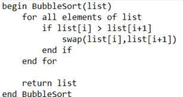
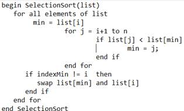
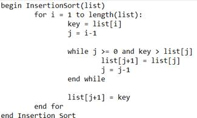
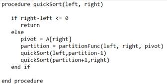
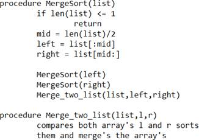

Sorting Algorithms
A Sorting Algorithms main purpose is to reposition a given array or list of
elements in ascending or descending order. Now taking about the algorithms itself we
are using 7 sorting algorithms in this visualizer namely Bubble Sort, Selection Sort,
Insertion Sort, Quick Sort, Merge Sort, Heap Sort and Tim Sort. These algorithms are
the commonly used algorithms for sorting.
BUBBLE SORT
Bubble sort also known as sinking sort from time to time, is a simple sorting
algorithm that repeatedly steps through the list, compares adjacent elements and
swaps them if they are in the wrong order. The pass through the list is repeated until
the list is sorted. But the algorithm is not suitable for amounts of data as its average
complexity is of Ο(n2
), Where n is the number of elements.

SELECTION SORT
Selection sort is an in-place comparison sorting algorithm. It has an O(n^2) time complexity, which makes it unsuitable for an array size of large numbers, and in general executes worse than the similar insertion sort. Selection sort is well known for its simplicity and has performance advantages over more intricate algorithms in certain circumstances, particularly where additional memory is limited. The algorithm works by pushing the least element to the start of the array by swapping it with the first element of the array and the pointer pointing to the first element is moved to the next element and this process goes on till the last element of the array and eventually the array will be sorted.

INSERTION SORT
Insertion Sort is an in-place comparison sorting algorithm. In this algorithm, a sub array is kept which is always sorted. An element which needs to be inserted in this sub array, has to find its right position were it should be and then it will to be inserted in that position. Hence, it's called Insertion Sort.

QUICK SORT
Quick Sort is very efficient sorting algorithm except for its worst-case complexity and it is based on partitioning the array into two halves by taking a pivot element which can either be the first of last element of the array, the element on the left side of the pivot will be smaller than it and elements on the right side will be larger than it we do this partitioning recursively until the array is sorted.

MERGE SORT
Merge Sort is one the most efficient sorting algorithms among all the algorithms as even its worst-case time complexity being O(n log n). It follows the divide and conquer method as it divides the array into smaller sub arrays and compares these sub arrays and sorts them accordingly and merges these sorted sub arrays to get the final array.
